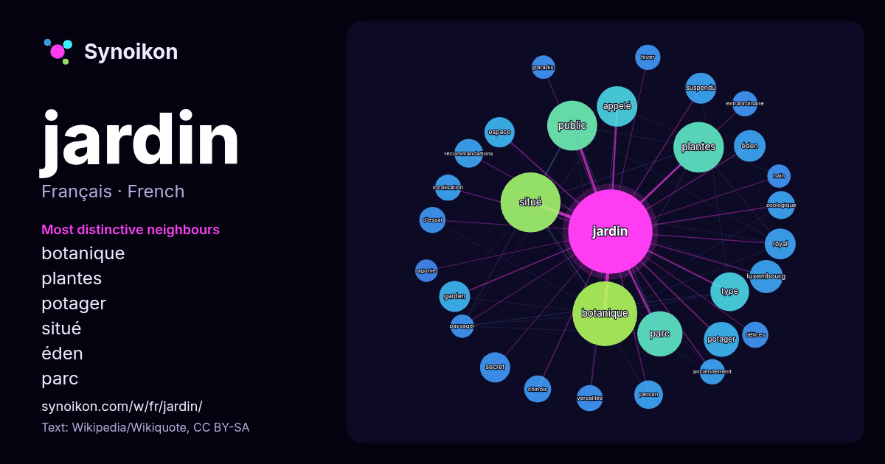

Français · liste des mots du jour
jardin
“garden” · Les mots trouvés autour de lui dans 1464 occurrences issues de Wikipédia, Wikiquote.

Voisins les plus spécifiques
- botanique 83×
- plantes 35×
- potager 28×
- situé 25×
- éden 23×
- parc 22×
- public 22×
- luxembourg 21×
- garden 21×
- suspendu 20×
- persan 18×
- recommandations 18×
- zoologique 18×
- secret 17×
- appelé 17×
- délices 16×
- d'essai 14×
- extraordinaire 14×
- versailles 14×
- espace 14×
× = combien de fois plus souvent que dans le texte général de Wikipédia.
Voisins les plus fréquents
- botanique 92
- situé 79
- plantes 56
- public 55
- parc 45
- appelé 36
- type 33
- paris 29
- française 28
- potager 27
- luxembourg 24
- éden 22
- nom 22
- france 21
- garden 21
- royal 21
- suspendu 21
- espace 20
- secret 20
- femmes 19
En contexte
- Pour les articles homonymes, voir Jardin (homonymie). Cet article ne cite pas suffisamment ses sources (mai 2018). Si vous disposez d'ouvrages ou d'articles Wikipedia snippets · Jardin
- Le jardin à l’anglaise, appelé aussi jardin anglais ou jardin paysager, avec ses formes irrégulières, est souvent opposé au jardin à la française ou jardin Wikipedia snippets · Jardin à l'anglaise
- {{section à recycler}}. Le jardin à la française, également appelé jardin régulier ou jardin classique, est un type de jardin baroque « paysager » basé Wikipedia snippets · Jardin à la française
- Luxembourg (homonymie), Le Jardin du Luxembourg et Le Jardin du Luxembourg (chanson). Le jardin du Luxembourg est un jardin ouvert au public, situé dans Wikipedia snippets · Jardin du Luxembourg
- Les jardins suspendus de Babylone sont un édifice antique, considéré comme une des Sept Merveilles du monde antique. Ils apparaissent dans les écrits Wikipedia snippets · Jardins suspendus de Babylone
- articles homonymes, voir Majorelle. Le jardin Majorelle (en berbère : ⵓⵔⵜⵉ ⵎⴰⵊⵓⵔⵉⵍ ; en arabe : حديقة ماجوريل) est un jardin botanique touristique d'environ Wikipedia snippets · Jardin Majorelle
- Le jardinage est l'art de composer un jardin ; il est rattaché à différentes sciences notamment l'horticulture et l'agriculture. La méthode consiste à Wikipedia snippets · Jardinage
- Le jardin des plantes de Paris, ou simplement Jardin des plantes, est un parc botanique, écologique et zoologique situé dans le 5e arrondissement de Paris Wikipedia snippets · Jardin des plantes de Paris
Autres mots
- art
- automne
- carte
- chanson
- chat
- chemin
- cheval
- chien
- climat
- cloche
- cœur
- dieu
- désert
- eau
- famille
- forêt
- histoire
- hiver
- horloge
- langue
- miel
- miroir
- monnaie
- montagne
- mort
- mère
- nature
- nourriture
- ombre
- pain
- pluie
- pont
- pouvoir
- printemps
- santé
- science
- sel
- silence
- temps
- tempête
- thé
- train
- travail
- trésor
- vie
- ville
- vérité
- étoile
- île
Précalculé le 2026-10-09 avec les paramètres par défaut (±5 mots, corpus moyen). La carte interactive peut l’actualiser avec des données en direct.
Interface traduite automatiquement ; corrections bienvenues.